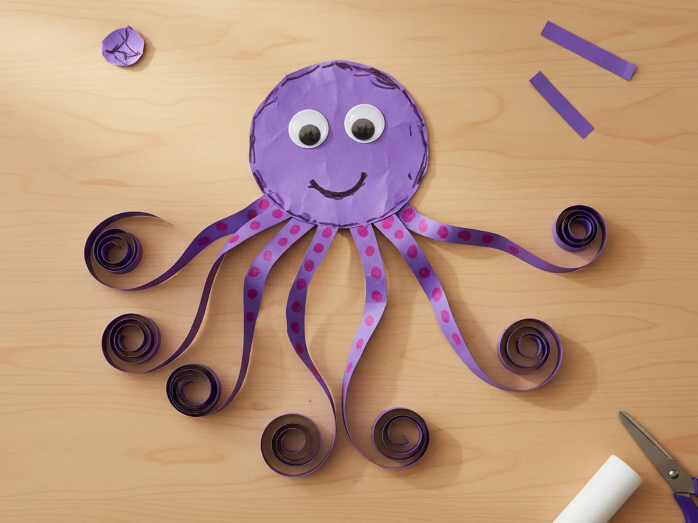
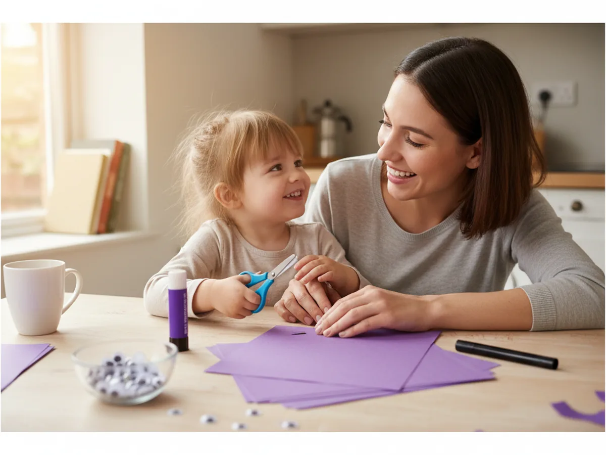
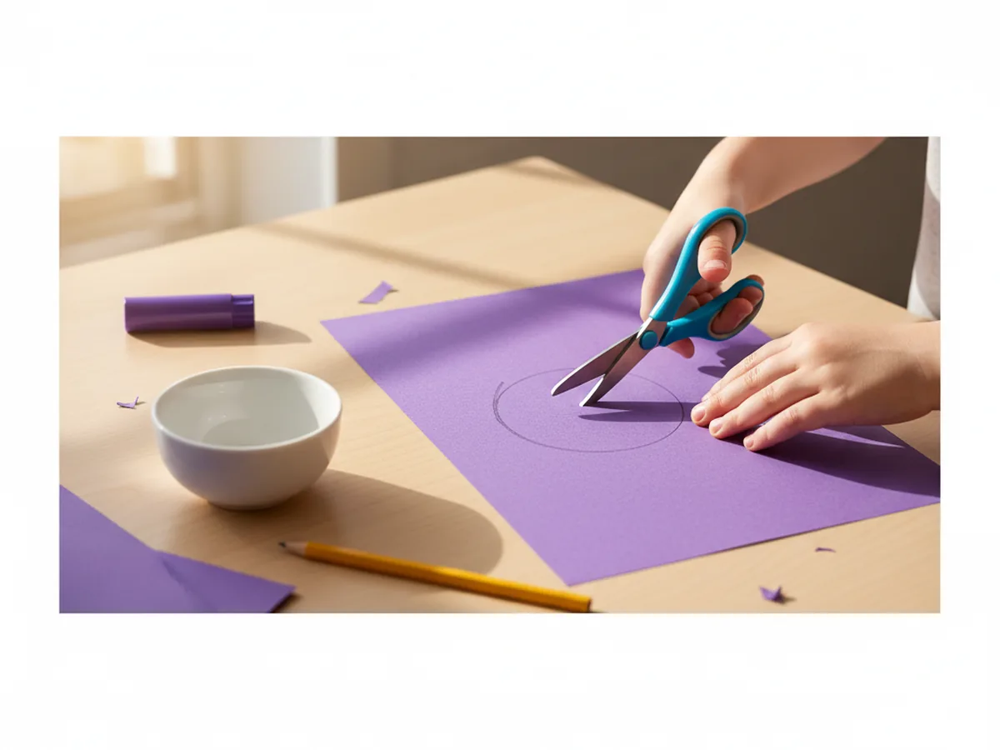
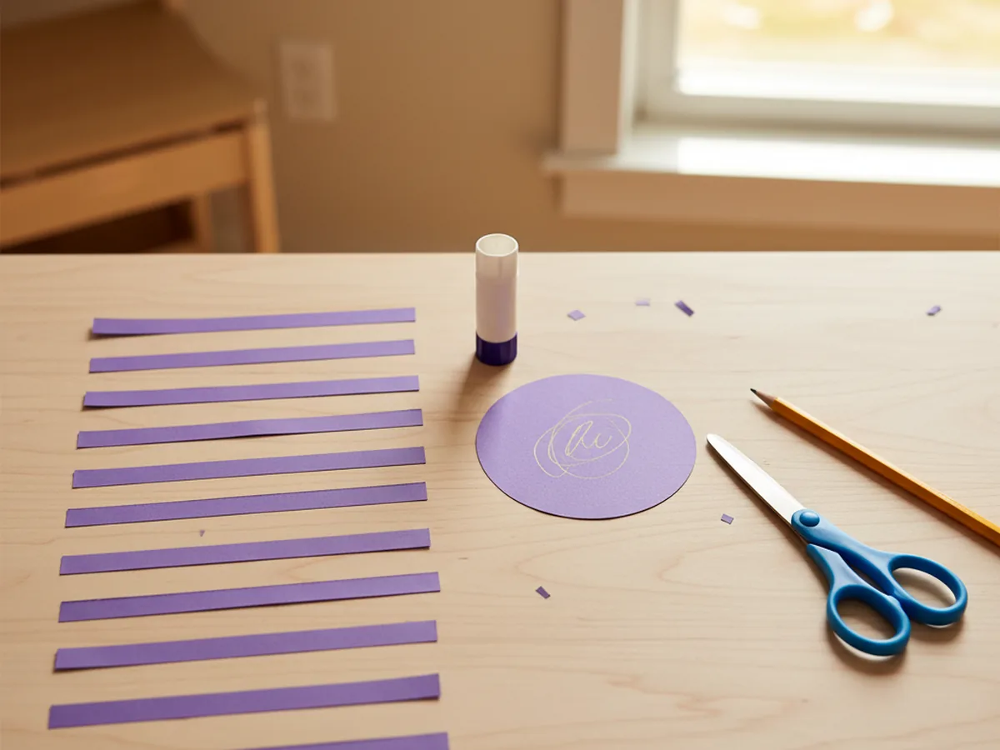
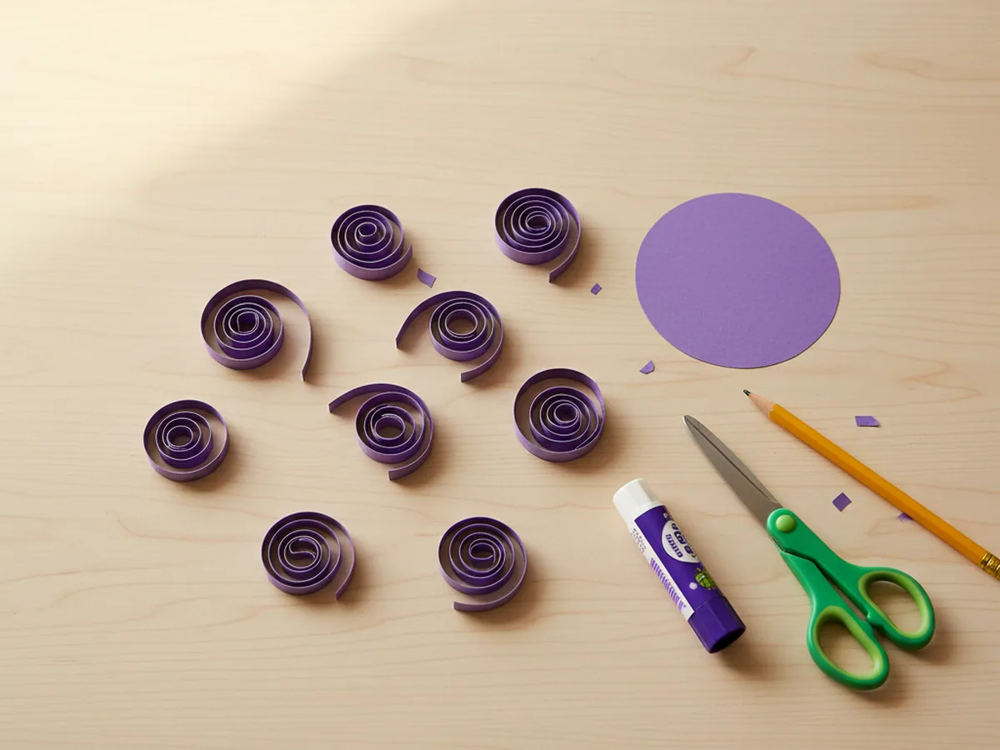
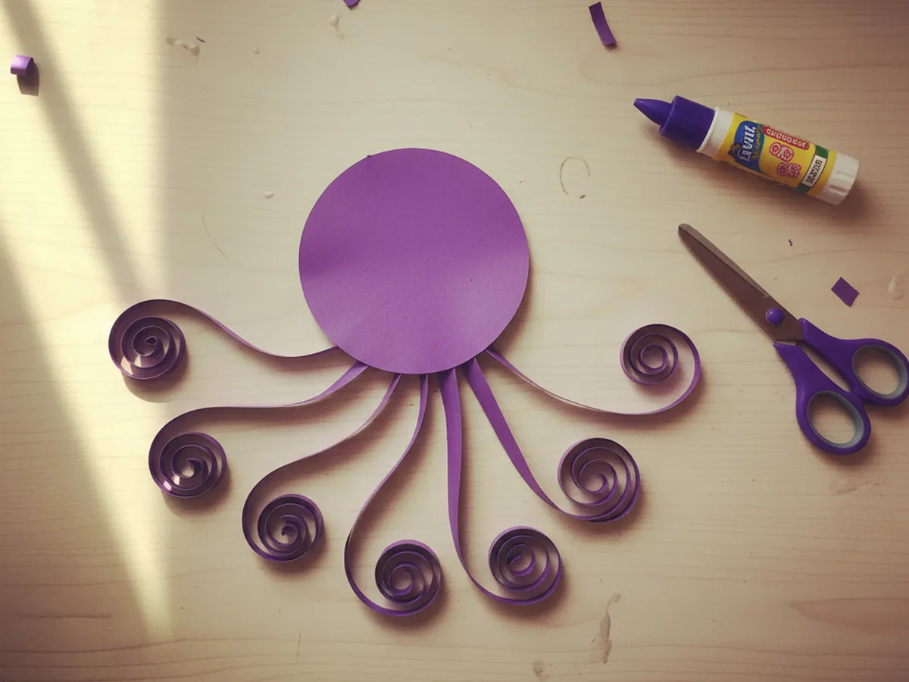
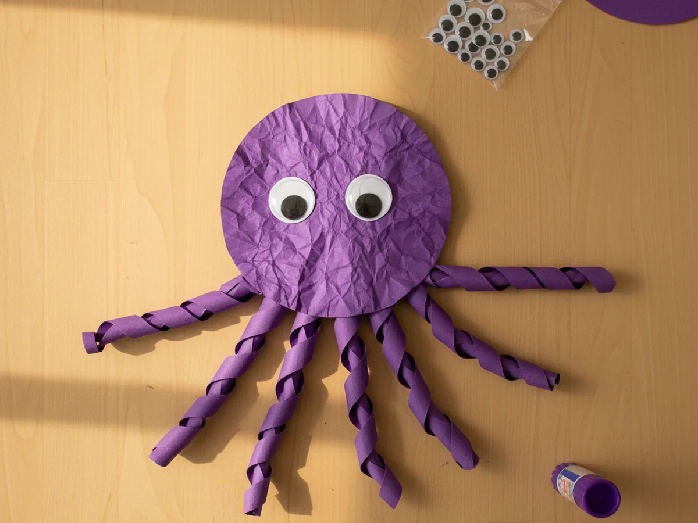
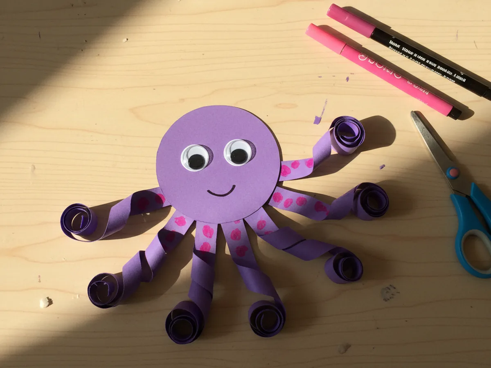

If your little one loves anything that lives under the sea, this octopus paper craft is going to be the sweetest afternoon for both of you. 🐙 With just a few sheets of construction paper, a glue stick, and a black marker, you can turn an ordinary kitchen-table moment into a fun shared activity that ends with the cutest curly-armed octopus smiling back at you. No fancy templates, no complicated folding, no special skills required.
The real magic of this easy octopus paper craft is the moment those eight little tentacles get curled around a pencil and suddenly look exactly like an octopus drifting through the ocean. Whether your kiddo is four or nine, this is one of those projects that feels almost too simple for how adorable the finished result turns out to be.
Why Kids Love This Craft
There is just something magical about an octopus, all those wiggly arms and those big curious eyes. Kids find it endlessly fun, and this paper octopus craft gives them the chance to bring one to life with their own hands. They get to choose the color, pick where the eyes go, and decide whether their octopus has a tiny smile or a goofy grin. That little dose of creative control is huge for little ones.
From a developmental angle, this octopus paper craft for kids is a wonderful little workout for fine motor skills. Cutting eight skinny tentacle strips, wrapping each one around a pencil, and pressing them carefully into place all build hand strength, patience, and focus in the gentlest way. The steps are simple enough that ages 4 and up can do most of it independently, with just a tiny bit of help on the smallest details.
And the emotional payoff is real. When the last tentacle goes on and that ocean-friend personality starts to peek through, you will see your child light up. The finished octopus is the perfect size for taping to a bedroom wall, hanging from a string as a little mobile, or popping into a summery card for grandma. 💙

What You'll Need
Here is everything you need to make this cute octopus paper craft at home. Lay it all out before you start so the activity flows smoothly from beginning to end.
- Crayola Construction Paper (240 sheets, assorted colors), you will use purple, pink, or blue for the octopus body and tentacles.
- Elmer's Disappearing Purple Glue Sticks (6 + 2 bonus), washable and easy for small hands to handle.
- Fiskars Blunt-Tip Kids Scissors, perfect for ages 4 and up.
- Creativity Street Wiggle Eyes (100-piece assorted), two per octopus, no glue needed if you grab the self-adhesive style.
- Sharpie Permanent Markers, Fine Point, Black, for the smile and any small details.
- Crayola Ultra Clean Fine Line Washable Markers (12 ct), for the pink suction cup dots along the tentacles.
- A pencil, for tracing the head circle and curling the tentacles.
- A small bowl or cup, optional, for tracing a smooth round head shape.
Step-by-Step Instructions
This octopus paper craft step by step is gentle and easy to follow, even on the very first try. Work through each step together and let your child take the lead wherever they feel confident.
Step 1: Cut the Octopus Head
Start with a sheet of purple, pink, or blue construction paper. Use a pencil to trace a round circle about the size of your child's palm with fingers spread out. A small cereal bowl or large mug flipped upside down is perfect for tracing a smooth curve. Once the circle is traced, have your child cut it out along the pencil line. This will become the cozy round head of your octopus.
For children ages 4 to 5, trace the circle for them first so they can focus all their energy on the satisfying part of cutting it out. A slightly wobbly circle just adds to the charm and gives the finished octopus a wonderfully handmade look that no printed template can match.

Step 2: Cut the Eight Tentacles
From the same color construction paper, cut eight long thin strips. Each tentacle strip should be about half an inch wide and roughly twice as long as the head is tall. You do not need to be perfectly precise here, slight variations make the finished octopus look more natural and playful. If your little one is just learning to cut straight lines, this is great practice on a low-pressure project.
To make this part easier on tiny hands, lightly pencil eight evenly spaced lines onto the paper first. Your child can then follow the lines and feel proud of their straight cutting. If they get tired halfway, you can step in and finish the last few strips together.

Step 3: Curl the Tentacles
This is the magical step that turns flat paper strips into wiggly little octopus arms. Take one tentacle strip, hold one end against a pencil, and tightly wrap the rest of the strip around the pencil from end to end. Hold it wrapped for about five seconds, then gently slide the strip off the pencil. It should hold a fun spiral curl. Repeat with all eight tentacles.
Kids absolutely love this part. The transformation from a boring straight strip to a springy curl feels almost like a science experiment. Let your child practice with the first one or two strips and then take over the curling completely. It is a sweet little moment of accomplishment.

Step 4: Glue the Tentacles to the Head
Flip the round head shape over so the back is facing up. Apply a small dab of glue stick to one flat end of a curled tentacle, then press it onto the bottom edge of the head with the spiral hanging downward. Continue gluing all eight tentacles in a fan shape along the bottom curve of the head, spacing them so they fan out evenly to the left and right.
Once all eight tentacles are attached, flip the head back over so the smooth front is facing up. The tentacles should peek out and curl underneath the head like an octopus floating through the ocean. This is the moment your child will gasp and recognize their paper octopus craft coming together!

Step 5: Add the Eyes
Now for the part that brings real personality. Peel the backing off two self-adhesive googly eyes and have your child stick them onto the front of the head, slightly above the middle and spaced about an inch apart. If your googly eyes do not have stickers on the back, a small dab of glue stick works just as well. Press each eye down firmly with a fingertip for a few seconds so it stays put.
Take a moment here to step back and look at your octopus together. Even without the smile yet, the personality is starting to shine through. Your little one will love seeing it slowly come to life. 😊

Step 6: Draw the Smile and Suction Cups
This final step completes the whole personality. Using the black marker, draw a small curved smile under the googly eyes. Keep it short and soft, a gentle U shape works perfectly. Then take a pink fine line marker and draw a row of small dots along each tentacle to give the octopus its tiny suction cups. A few dots per tentacle is plenty.
Once those little finishing touches go on, your child can add any extras they want: tiny eyelashes above the eyes, a polka-dot pattern on the head, or even small bubbles drawn around the octopus to make it look like it is swimming. There is so much room for creativity here, and every octopus paper craft ends up wonderfully unique. 🌊

Variations to Try
Underwater Scene Octopus: Glue the finished octopus onto a sheet of blue construction paper and let your child draw or cut out little fish, seaweed, bubbles, and coral around it. The whole thing becomes a sweet undersea scene worth framing and hanging in their bedroom.
Handprint Octopus: Skip the cut tentacles entirely and trace your child's hand twice on construction paper. Cut the two handprints out, glue them back-to-back along the wrist, then add the round head on top. The four fingers of each hand become eight perfect tentacles. This version is wonderful for toddlers who are not quite ready for scissor cutting yet.
Rainbow Octopus Family: Make a whole tiny family of octopuses in different colors: one pink, one blue, one purple, one yellow. String them together with thread along the top to create a cheerful garland for a playroom or a summer-themed birthday party. Each one can have its own little smile and color of suction cups for extra personality.
Final Thoughts
This octopus paper craft really is one of those projects that gives way more joy than the small effort it takes. It comes together in about 25 minutes from start to finish, uses materials you likely already have at home, and gives your little one that wonderful feeling of having made a real sea creature with their own hands. The mess is minimal, the steps are gentle, and the finished octopus is genuinely cute enough to keep on display for weeks. 🐙
If your child makes their own paper octopus, I would love to see it. Share a photo on Pinterest and pin this article so other families can find it too. Happy crafting!
More Crafts You'll Love
If your little one had fun making this paper octopus, these other adorable sea-themed paper crafts are just as easy and just as sweet: